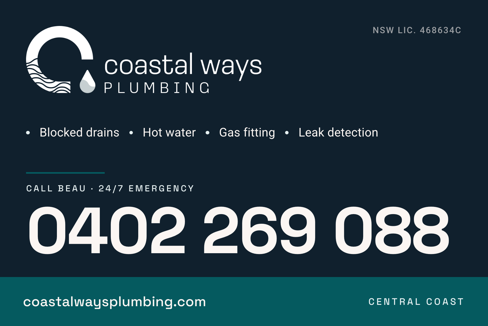
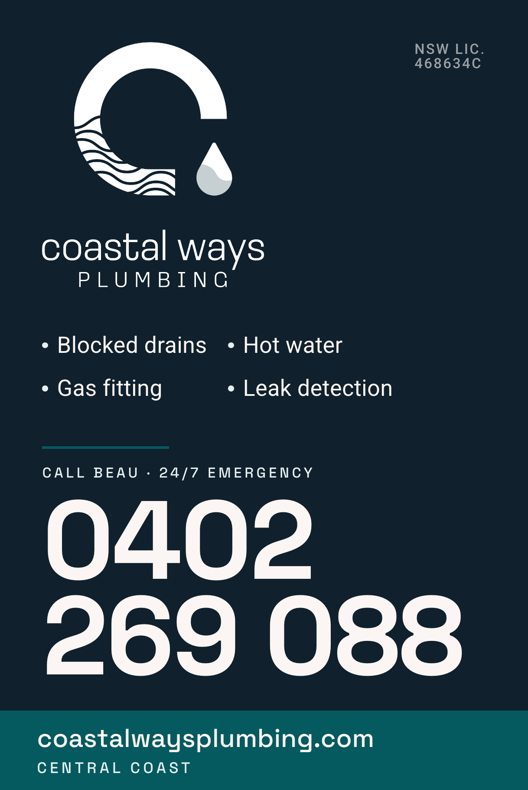
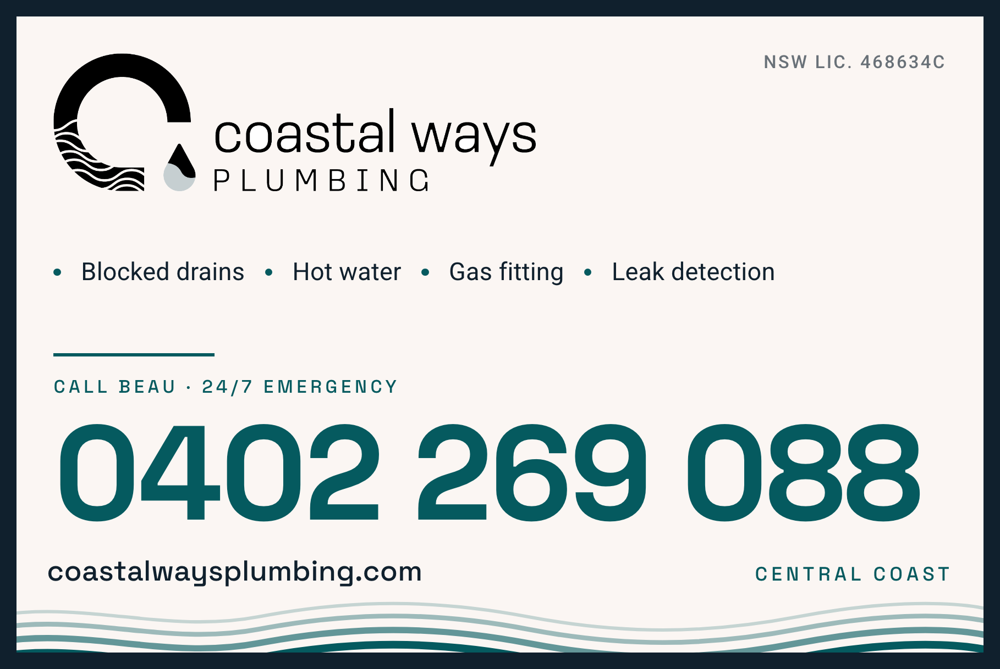
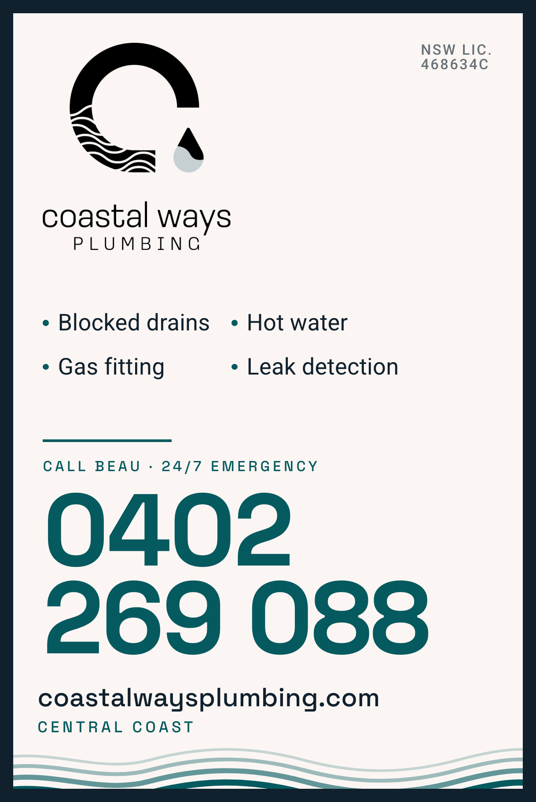
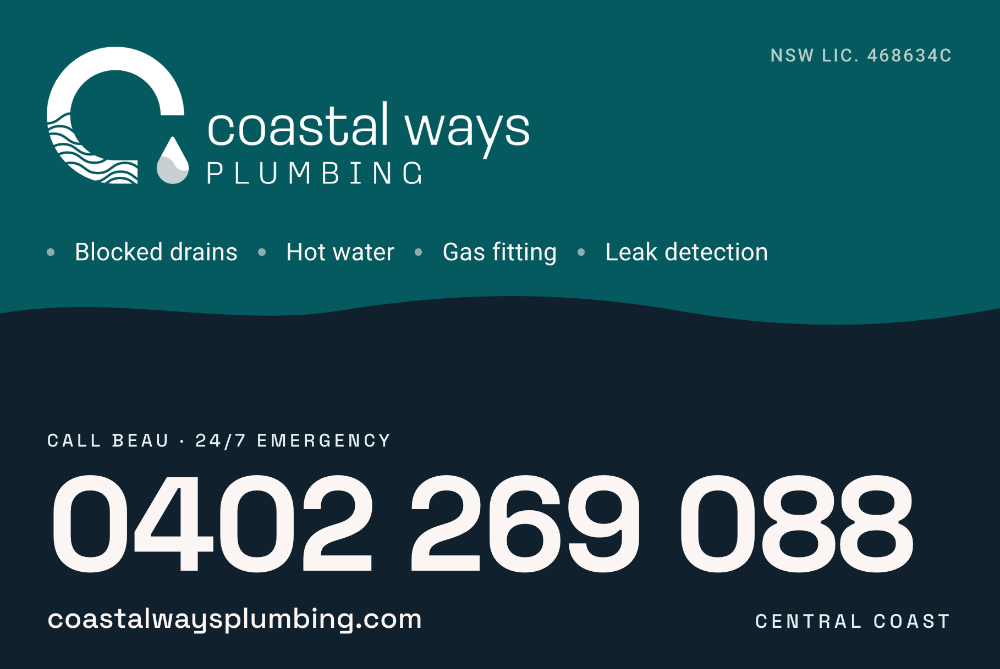
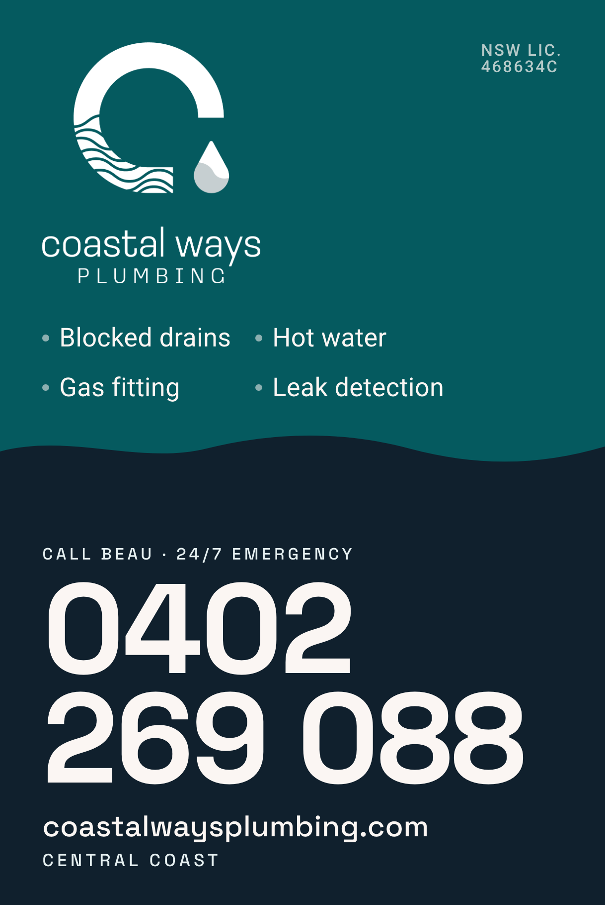

Hi Emma — three directions for the magnetic door signs, each drawn in both orientations. All built on your existing brand: the real logo lockup, the brand colours and type. Have a look, pick the direction and orientation you like, and the print-ready file is right there under each one to send straight to a sign printer.
The established, licensed, premium read. Solid navy field with a teal footer band — the highest-contrast option in the set, and the one that reads hardest on the white and silver utes that dominate the trade.


Cream number on deep navy is the strongest contrast pair in the brand palette. Nothing competes with the phone — logo, services and licence all sit clearly below it in the hierarchy.
White, silver or light-grey vehicles. If the fleet is mostly light-coloured utes, this is the safe pick.
The clean, local, approachable read — closest to the brand's own "calming coastal" direction. Sand field with a wave footer lifted from the wave lines inside the logo's C, plus a navy keyline so the sign still has a defined edge on light paint.


The lightest, most premium-feeling option, and the only one that uses the wave motif as a real design device rather than decoration. Teal number on sand is still a strong contrast pair.
On a white ute the sand field has little edge contrast — the navy keyline is what rescues it. Best on a dark or mid-tone vehicle. On a white ute, A or C will punch harder.
The differentiation play. Almost every plumber's vehicle on the Coast is white-and-blue; a deep teal field owns a colour nobody else on the road is using. The teal and navy zones meet on a wave taken from the logomark.


Two strong tones mean it never disappears into the vehicle paint — the most colour-flexible of the three across a mixed fleet. The wave split is the one device here that couldn't come off a template.
A mixed fleet, or if standing out from other plumbers matters more than looking like the tidiest operator on the street.
Six print-ready PDFs at true physical size, plus the screen proofs above.
| Item | Detail |
|---|---|
| Trim size | 600 × 400mm (landscape) · 400 × 600mm (portrait) |
| File size | 606 × 406mm / 406 × 606mm — includes 3mm bleed on every edge |
| Safe margin | ~29mm from trim, so nothing important sits inside the die-cut corner radius |
| Phone number | ≈57mm cap height — comfortably readable at 20m+ |
| Colour | Brand navy #10202D · teal #055A5F · sand #FBF6F3, supplied RGB |
| Type | Space Grotesk (display) + Roboto — embedded, no font substitution at print |
| Compliance | NSW Lic. 468634C on every panel, as required on trade advertising |
What colour are the vehicles you're putting these on? That's really the only thing that changes the answer:
Let us know the vehicle colours and which orientation suits (landscape sits neatly on ute and van doors; portrait suits taller van panels), and we'll finalise your pick.